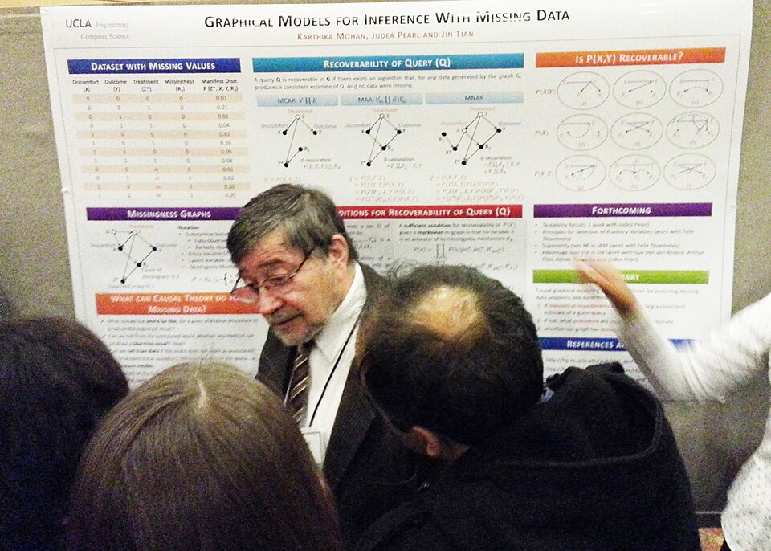

1988 · 1997
Pearl · Hochreiter–SchmidhuberBayes net과 LSTM — 잠복기에 묻힌 보석들
잠복기에 — 다음 시대의
씨앗 둘이 더 심어집니다.

1988 · BAYES NET
Judea Pearl · UCLA
불확실한 세상을 — 확률의 그래프로 표현하는 방법. ‘증상 → 병’처럼 원인-결과의 화살표를 그려 추론. 의료·로봇·자동차의 의사결정 시스템에 깊이 박혔습니다. 2011년 튜링상.
1997 · LSTM
Hochreiter · Schmidhuber
긴 문장이나 시계열에서 옛 정보를 잊지 않는 신경망. 이름은 ‘Long Short-Term Memory’. 한동안 묻혔다가 — 2014년 구글 번역의 핵심이 되며 부활.
2001 · RANDOM FOREST
Leo Breiman의 여러 결정 트리를 모은 방법. 데이터 분석 대회의 단골 우승자가 됩니다.
잠복기에 만들어진 도구들 — 한 줄로
백프롭(다층 학습) · CNN(이미지) · SVM(분류) · Bayes net(추론) · LSTM(시퀀스) · Random Forest(앙상블). 거의 모든 현대 AI의 기본 도구가 이 17년 사이에 만들어졌습니다 — 시장이 떠난 자리에서.
그리고 한 가지 더 — 1990년대 후반 인터넷이 폭발하며, 처음으로 대량의 디지털 데이터가 쌓이기 시작했습니다. 도구가 갖춰지고, 데이터가 쌓이고 — 마지막 부품 하나만 남았습니다. 충분히 빠른 컴퓨터.